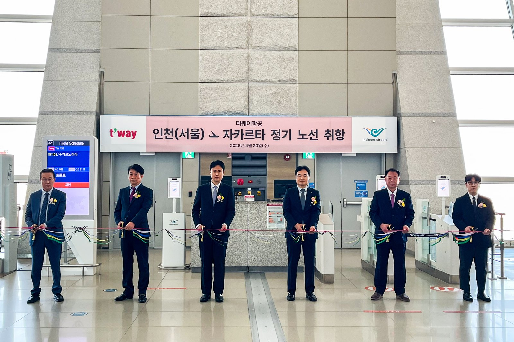
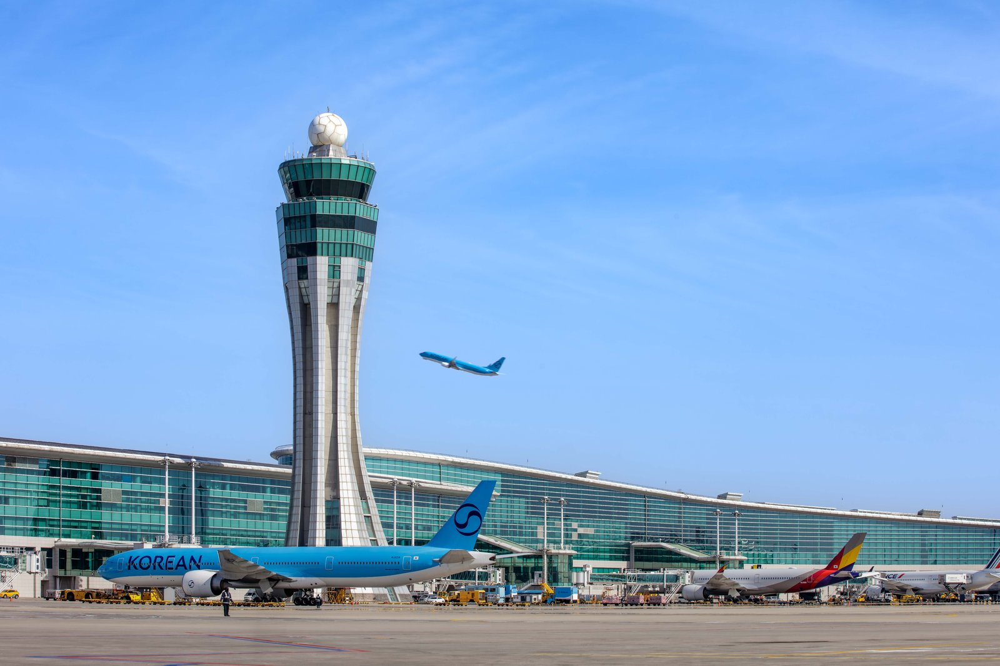

통합 진에어 2027년 3월 출범, 김해 국제선 33개 노선 계획
경쟁력 제고 방안 1년 11개월 뒤 계열 LCC 3사 합병
자카르타 대체 취항과 인천 슬롯 80회
AI경제저널=김갑봉 기자 | 진에어·에어서울·에어부산이 2027년 3월 17일 통합 진에어로 출범할 예정이다. 국토교통부(국토부)와 공정거래위원회(공정위)는 11월 12일 세 회사 합병 인가와 기업결합 승인을 발표했다.
국토부는 통합 진에어가 국내 저비용항공사(LCC, Low Cost Carrier) 가운데 국제선과 국내선을 가장 많이 운항할 예정이라고 밝혔다.
인가 발표는 정부가 대한항공·아시아나항공 기업결합에 대응해 「항공운송 산업 경쟁력 제고 방안」을 내놓은 지 1년 11개월 만이다.

2024년 12월 독과점 우려와 LCC 지원 약속
국토부는 2024년 12월 11일 산업경쟁력강화 관계장관회의에서 「항공운송 산업 경쟁력 제고 방안」을 발표했다. 발표일은 대한항공·아시아나항공 기업결합 완료 예정일(12월 12일) 하루 전이었다.
국토부는 국내외 경쟁당국 시정조치로 대체항공사가 들어가야 하는 노선에 LCC가 먼저 들어가게 지원한다고 했다. 대상은 중국 장자제·시안, 일본 나고야, 인도네시아 자카르타, 태국 푸껫, 호주 시드니 등이다.
국토부는 인천국제공항 시간당 이착륙 횟수(슬롯)를 78회에서 2025년 하반기 80회로 늘리겠다고 했다.
국토부는 유럽·서남아 중장거리 운수권을 추가로 확보해 LCC에 배분하기로 했다. 부산~자카르타, 청주~발리에 이어 유럽·서남아 등 중장거리 노선의 지방공항 전용 운수권도 계속 확보한다고 했다.
박상우 당시 국토부 장관은 "대한항공과 아시아나항공의 기업결합에 따른 국민의 독과점 우려를 해소하고 소비자 보호를 위하여 건전한 경쟁환경을 조성하는데 최선을 다 하겠다"고 말했다.
자카르타 대체 취항과 슬롯 80회
국토부와 공정위는 2026년 1월 6일 인천~자카르타 대체항공사로 티웨이항공을, 김포~제주 대체항공사로 이스타항공·제주항공·티웨이항공·파라타항공을 선정했다.
국토부는 3월 19일 하계 일정을 확정하며 대체항공사 노선 운항이 본격 시작된다고 밝혔다. 티웨이항공은 4월 29일 인천~자카르타에 취항했다. 347석 규모 A330-300을 투입해 주 5회 운항하기로 했다.
인천국제공항공사는 3월 30일 하계시즌(3월 29일~10월 24일)부터 시간당 이착륙 횟수 80회를 적용했다고 밝혔다. 2024년 방안이 밝힌 시기는 2025년 하반기였다.

2026년 11월 계열 LCC 3사 합병 인가
세 회사는 모두 한진 기업집단 계열사다. 진에어 최대주주는 지분 54.91%를 가진 대한항공이다. 아시아나항공은 에어부산 지분 58.40%, 에어서울 지분 100%를 갖고 있다.
공정위는 계열사 사이 합병이어서 기업결합 심사기준상 경쟁제한성이 없는 것으로 추정된다고 밝혔다.
국토부는 항공산업·소비자·고용·법률·회계 전문가로 꾸린 합병자문단 자문과 한국교통연구원·회계법인 검토, 면허 자문회의를 거쳤다. 국토부는 외국인 사실상 지배 같은 결격사유가 없고 자본금·재무능력·사업계획 요건을 채웠다고 판단했다.
국토부는 출범일까지 안전운항체계 변경검사와 해외 항공당국 인허가를 마치라는 조건을 붙였다. 제출한 소비자 보호 계획 등의 이행 여부를 매월 국토부에 보고하라는 조건도 붙였다.
진에어와 에어부산은 11월 16일 이사회를 다시 열어 합병 승인 임시주주총회를 12월 7일에서 2027년 2월 3일로 미뤘다. 합병기일은 2027년 3월 16일, 합병등기 예정일은 3월 17일이다.
진에어는 합병비율 등 합병 조건이 바뀌지 않았다고 공시했다. 진에어는 에어부산 주식 1주에 진에어 주식 0.2862684주, 에어서울 주식 1주에 0.7501939주를 주기로 했다.
진에어와 에어부산은 11월 24일 서울 여의도에서 각각 주주간담회를 열어 합병 내용을 설명한다.
김해 제2허브와 다른 LCC 경쟁력 방안
진에어가 낸 부산 제2허브 계획은 김해공항 국제선을 28개 노선 주 281회에서 33개 노선 주 339회로 늘리는 내용이다. 부산 거점 항공기를 늘리고 에어부산 시설을 유지하며 김해공항을 독립 정비 거점으로 키운다는 내용도 담았다.
국토부는 대한항공과 진에어에 부산시 등 지역사회와 긴밀하게 소통해 부산 제2허브 육성에 충실히 임하라고 권고했다. 진에어가 제출한 제2허브 계획 이행 여부는 지속 관리하겠다고 밝혔다.
박준상 국토부 항공산업과장은 진에어에 "국내 최대 규모의 LCC가 되는 만큼 국제 항공시장에서의 경쟁력 확보와 더불어 국민의 항공교통 편의성이 증진될 수 있도록 할 것"을 당부했다.
국토부는 대형항공사(FSC, Full Service Carrier) 합병에 이어 LCC 합병으로 대한항공 계열 규모가 커진다고 밝혔다. 다른 LCC 경쟁력을 키우는 방안도 검토하겠다고 했다.
부산 강서구는 11월 10일 진에어와 대한항공에 본사 유치 제안문과 구청장 서한문을 보냈다. 강서구는 대저2동 에어부산 사옥(연면적 약 1만8300㎡)과 승무원 훈련시설을 바로 쓸 수 있다고 밝혔다. 존속법인 진에어 본점은 서울 강서구 마곡중앙로에 있다.
LCC 생산성과 항공사 합병을 다룬 연구
김현정은 2025년 논문에서 항공정보포털 2019~2024년 자료로 LCC 5개사 생산성을 비교했다. 비교 대상에는 통합 3사가 모두 들어 있다. 측정 도구는 맘퀴스트 생산성지수(Malmquist Productivity Index, MPI)다.
논문을 보면 기간 평균으로 국제선 생산성은 약 3.7% 올랐고 국내선은 약 1.1% 내렸다. 생산성 변화율 순위에서 진에어는 국제선 1위, 국내선 5위였다.
이창재는 2024년 논문에서 대한항공·아시아나항공 기업결합을 사례로 경쟁제한성 판단기준을 다뤘다. 공정위가 부과한 구조적 조치(슬롯 반납 등)와 행태적 조치(운임 인상과 서비스 질 저하 방지)의 효과도 분석했다.
이 논문은 미국 제트블루(JetBlue)와 스피릿(Spirit) 결합 사례로 미국 경쟁당국 결합승인 기준을 살폈다.
논문에 따르면 미국 법원은 스피릿을 가격에 민감한 소비자의 필수 선택지로 보고, 이 선택권이 줄면 경쟁을 심각하게 해칠 수 있다고 판단했다.
도모히코 가와모리(Tomohiko Kawamori)와 밍신 린(Ming Hsin Lin)은 2013년 논문에서 합병 모형을 세웠다. 허브 항공사가 허브 공항 하나로 여러 도시를 잇고, 이 항공사가 직항편을 운항하는 LCC와 합병한다고 가정했다.
두 사람은 합병 항공사가 허브 경유편과 직항편 가운데 어느 쪽을 접어야 이익이 큰지가 비용에 따라 달라진다고 분석했다. 그 비용은 허브 항공사 운영비용과 환승승객 추가 시간 비용이다.
이들은 합병이 사회후생을 늘릴 수도 줄일 수도 있다며 합병 규제가 필요할 수 있다고 봤다.
다만 이 모형이 가정한 합병은 허브 항공사와 직항 LCC 한 곳 사이다. 이번 통합은 LCC 세 곳 사이 합병이다.
이 글은 인천투데이 2024년 12월 16일 게재 기사를 최신 상황으로 고쳐 썼다.
참고문헌
공식 발표·공공기록
- 국토교통부, 「국제항공 경쟁력과 소비자 편익 제고를 위한 국제선 네트워크 개편」 보도자료(안건 「항공운송 산업 경쟁력 제고 방안」), 2024년 12월 11일, 국가물류통합정보센터 게재, https://www.nlic.go.kr/nlic/logpolDt.action?fldLogpolRefSeq=1436&command=VIEW
- 국토교통부·공정거래위원회, "국토부, 대한항공·아시아나 독과점 노선에 대체 항공사 선정", 대한민국 정책브리핑, 2026년 1월 6일, https://www.korea.kr/news/policyNewsView.do?newsId=148957555
- 국토교통부, 「2026년 하계 정기 항공편 일정 확정」 보도자료, 2026년 3월 19일, KDI 경제정보센터 게재, https://eiec.kdi.re.kr/policy/materialView.do?num=278200
- 인천국제공항공사, 「인천공항, 올해 하계 항공기 운항횟수 증대로 인천-지방노선 연계 강화한다」 보도자료, 2026년 3월 30일, https://www.airport.kr/bbs/co_ko/84/139309/artclView.do
- 인천국제공항공사, 「인천공항, 티웨이항공 인도네시아 자카르타 신규 취항으로 동남아 허브 네트워크 한층 강화」 보도자료, 2026년 4월 30일, https://www.airport.kr/bbs/co_ko/84/139354/artclView.do
- 국토교통부·공정거래위원회, 「진에어-에어서울-에어부산 합병 인가, 27년 3월 17일부터 진에어로 통합 예정」 보도참고자료, 2026년 11월 12일, https://www.ftc.go.kr/www/selectBbsNttView.do?key=12&bordCd=3&nttSn=48219 (정책브리핑 전재 https://www.korea.kr/briefing/pressReleaseView.do?newsId=156788952)
- 부산광역시 강서구, 「부산 강서구, “통합 LCC 본사 최적지는 강서구...” 대한항공·진에어에 공식 유치 제안」 보도자료, 2026년 11월 12일, https://www.bsgangseo.go.kr/portal/board/post/view.do?bcIdx=526&mid=0501050000&idx=410496
- 진에어, 「[기재정정]주요사항보고서(회사합병결정)」, 2026년 11월 16일, 금융감독원 전자공시시스템, https://dart.fss.or.kr/dsaf001/main.do?rcpNo=20261116000892
- 진에어, 「[기재정정]주주총회소집결의」, 2026년 11월 16일, 금융감독원 전자공시시스템, https://dart.fss.or.kr/dsaf001/main.do?rcpNo=20261116801227
- 에어부산, 「[기재정정]주주총회소집결의」, 2026년 11월 16일, 금융감독원 전자공시시스템, https://dart.fss.or.kr/dsaf001/main.do?rcpNo=20261116801406
- 진에어·에어부산, 「기업설명회(IR)개최(안내공시)」, 2026년 11월 17일, 금융감독원 전자공시시스템, https://dart.fss.or.kr/dsaf001/main.do?rcpNo=20261117800140, https://dart.fss.or.kr/dsaf001/main.do?rcpNo=20261117800145
논문
- 김현정, 「비모수적 접근법에 의한 저비용 항공사의 생산성 평가와 개선 방안」, 『한국진로창업경영학회지』 9권 1호, 2025년 1월, 135~148쪽, https://doi.org/10.48206/kceba.2025.9.1.135
- 이창재, 「항공사 기업결합의 경쟁제한성 판단기준 - 국내 FSC 기업결합 및 미국 판례를 중심으로 -」, 『법학논총』(조선대학교 법학연구원) 31권 3호, 2024년 12월, 89~122쪽, https://doi.org/10.18189/isicu.2024.31.3.98
- Kawamori, T., & Lin, M. H., "Airline mergers with low cost carriers", 『Economics of Transportation』 2(2), 2013년, 63~71쪽, https://doi.org/10.1016/j.ecotra.2013.04.001
원 기사
- 김갑봉, "대한항공-아시아나 독과점 우려... 정부, LCC 지원 확대", 인천투데이, 2024년 12월 16일, https://www.incheontoday.com/news/articleView.html?idxno=259140
사진 출처
- [사진1] 인천국제공항공사, 「인천공항, 티웨이항공 인도네시아 자카르타 신규 취항으로 동남아 허브 네트워크 한층 강화」 보도자료(2026년 4월 30일) 별첨1, https://www.airport.kr/bbs/co_ko/84/139354/artclView.do
- [사진2] 인천국제공항공사, 「인천공항, 올해 하계 항공기 운항횟수 증대로 인천-지방노선 연계 강화한다」 보도자료(2026년 3월 30일) 별첨1, https://www.airport.kr/bbs/co_ko/84/139309/artclView.do
관련기사
- 통합 대한항공 출범 한 달 앞 시정조치 사건 다섯 건 심의
- [글로벌 인천공항⑭] 한중 노선 국적사 몫 54%→46%, 베이징·상하이 늘려야
- 항공사만 101개 인천공항, 독점인데 경쟁하는 이유
저작권자 © AI경제저널 무단전재 및 재배포, AI학습 및 활용 금지